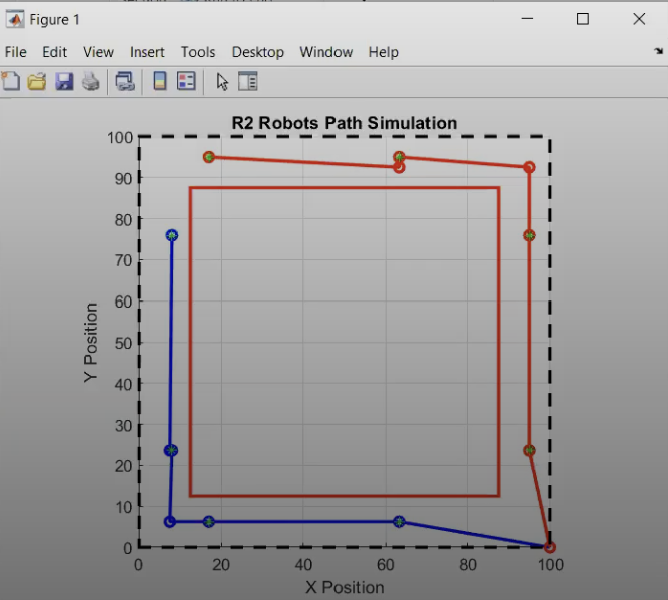
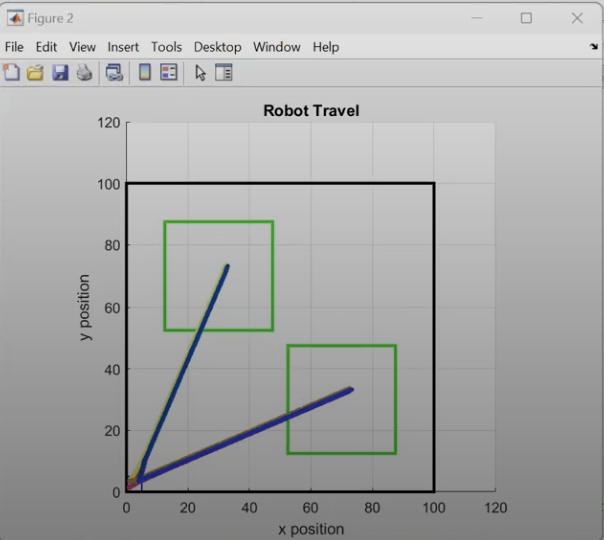

Multi-Robot Garden Maintenance Teams
R2 Robots Path Simulation

Robot Travel

Project Overview and Key Contributions:
- Led the implementation of advanced Voronoi cells-based control algorithms for a team of autonomous garden maintenance robots.
- Focused on lawn mowing and watering applications, optimizing path planning and area coverage strategies using the Voronoi tessellation approach.
- Achieved a quantifiable 20% improvement in path-tracking precision for the robot teams, particularly in dynamic and cluttered garden environments.
- Designed and implemented robust collision-avoidance protocols specifically tailored for multi-robot interactions within the garden maintenance scenario.
- Ensured efficient task allocation and coordination between robots to maximize coverage and minimize redundant operations.
- Utilized ROS (Robot Operating System) for simulation, control, and communication between the robotic agents.
- Conducted extensive testing and validation in simulated environments (e.g., Gazebo) to verify algorithm performance and system safety.